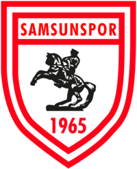

Samsun'da futbolun geçmişi 1909 yılında kurulan Tenvir-i Efkâr Gençler Kulübü'ne dek uzanmaktadır. Samsun'un ilk futbol kulübü olma özelliğini taşıyan bu kulüp Samsun Limanı başkanının önderliğinde kurulmuş ve Balkan Savaşlarının patlak vermesiyle de faaliyetlerine son vermiştir. Hemen ardından 1912 yılında darülmuallim ve sultani öğrencileri tarafından kulüp niteliği taşımayan fakat rakipleriyle karşılaşacak nitelikte bir takım oluşturulmuş, bu girişim de çok uzun ömürlü olmamıştır. 1919 yılında ise kent tarihinin ikinci kulübü kurulmuştur: Samsun İdman Yurdu. Tahir Usta'nın önderliğinde kurulan bu kulübün renkleri sarı-kırmızıydı. 1921 yılında ise Samsun İdman Yurdu'nun dışında faaliyet gösterecek ikinci bir futbol kulübü kuruldu. Bu kulübün adı Alyıldız İdman Ocağı, kurucusu ve ilk başkanı ise Gıyas Bey'di. Sarı ve lacivert renkleri benimseyen bu kulübü 1924 yılında Mustafa Kemal, Samsun'a ikinci gelişinde ziyaret etmiştir. 1923 yılında kurulan Zaferi Millî İdman Derneği, Samsun'daki üçüncü faal futbol kulübü olmuştur.Kırmızı-beyaz renkli bu kulübün ilk başkanı ise İsmail Hamami Bey'di.[13] Aynı dönemde, daha sonraları Türkiye İdman Cemiyetleri İttifakı'nın da kurucu üyelerinden olacak olan Bafra Kızılırmak ve Çarşamba Yeşilırmak kulüpleri kurulmuştur. Böylece kulüpler arasındaki ilk resmî karşılaşmalar da oynanmaya başlanmıştır.
İleriki zamanlarda ise Cumhuriyet Kızılırmak ve Gençler Birliği kulüpleri de kurularak ittifaka dahil olmuştur. 1926 yılında Zaferi Millî İdman Derneği tüzüğünde ve adında değişikliklere giderek Türkocağı Spor Şubesi adını almıştır. Ertesi yıl ise Türkocağı Spor Şubesi ve Alyıldız İdman Ocağı birleşerek Nuri Bey'in başkanlığında Samsunspor Kulübü kurulmuştur. Bu birleşmeyi takiben Bafra Kızılırmak ve Cumhuriyet Kızılırmak kulüpleri de birleşerek Bafra Gençlerbirliği adını almıştır. Siyah-beyaz renklerle mücadele eden Samsunspor; 1929-30 sezonunda kapatılarak tüm idarî, teknik kadro ve futbolcuları yeni kurulan Halkspor'a kaydırılmıştır. Fakat bir sonraki sene, kapatılan Samsunspor yeniden açılmıştır. Kulüp bu dönemde futbol, voleybol, atletizm ve denizcilik şubelerinde faaliyet göstermekteydi. 1932 yılında Samsunspor ismini mıntıkaya tescil ettirerek; Samsun İdman Yurdu, Halkspor, Tütün Fabrikasıspor ve Demirspor'la birlikte mıntıkayı oluşturmuştur. 1937 yılında ise Samsunspor ve Demirspor birleşerek Samsunspor-Demirspor Birliği'ni meydana getirmiştir. Çeşitli imkânsızlıklar nedeniyle kulüp bir süre faaliyetlerine ara verse de 16 Kasım 1950 tarihinde yeniden faaliyete geçmiş ve başkanlığına Osman Gündüz getirilmiştir. Ayrıca bu dönemde faaliyet alanlarına güreş de eklenmiştir. 1965 yılında Samsun'da bulunan beş amatör mahalli lig takımı olan 19 Mayıs, Fener Gençlik, Akınspor ve Samsun Galatasaray Gençlik kulüpleri Samsunspor'a katılarak dönemin Ticaret Bankası vekili Kadri Ersan'ın kulüp başkanlığında kırmızı-beyaz renkleri benimseyen Samsunspor vücut bulmuş ve resmen Türkiye 2. Futbol Ligi'nde boy göstermeye başlamıştır. Böylece Samsunspor, profesyonel futbol faaliyetlerine başlamıştır. Samsunspor'u oluşturan kulüplerin birleştiği tarih olan 1927 kulübün esas kuruluş yılı olmasına rağmen resmî kuruluş tarihi, profesyonelliğe başvurduğu tarih olan 30 Haziran 1965 olarak kabul edilmektedir. Kulübün başvurusu ise Beden Terbiyesi Umum Müdürlüğü'nce 19 Temmuz 1965 tarihinde onaylanmıştır. Kulübün tescil fişinde yer alan bilgilere göre kulübün bu dönemde futbol, basketbol, voleybol, atletizm, güreş, masa tenisi ve boks şubesi bulunmaktaydı. 1966 – 1967 sezonunda 2. olan kırmızı-beyazlı takım, aynı yıl Türkiye Kupası’nda yarı finale dek yükseldi.
Belirsizlik yılları: Samsunspor, profesyonel liglere ilk kez 1965-66 sezonunda günümüzdeki adı 1. Lig olan 2. Futbol Ligi'nde adım attı. 5 Eylül 1965 tarihinde ilk profesyonel lig maçını oynayan Samsunspor'un rakibi Yeşildirek idi. Samsun Şehir Stadı'nda oynanan ve hakemliğini Nadir Irmak'ın yaptığı maçı Samsunspor, Nihat Serçeme'nin attığı golle 1-0 kazanmıştır. Böylece Nihat, Samsunspor'un ilk lig golünü atan oyuncu olarak tarihe geçmiştir. Ligdeki bu ilk sezonunda Samsunspor, Beyaz Grup 5.si olmuştur. Aynı sezon Türkiye Kupası'nda ise henüz 2. turda Güneşspor'a elenilmiştir. Takım, 1966-67 sezonunda ligi 2.likle bitirirken, Türkiye Kupası'nda yarı finale kadar çıkmıştır. Kupada Konyaspor, Manisaspor ve Fenerbahçe'yi eleyen takım, Göztepe'ye iki maç sonucunda elenmiştir. Ertesi sezon kulüp, tarihindeki ilk başarısını elde ederek ligi Kamuran Soykıray'ın teknik direktörlüğünde Beyaz Grup lideri olarak tamamlamış ve 2. ligdeki ilk şampiyonluğunu yaşamıştır. 1969-70 sezonunda şimdiki adı Süper Lig olan 1. Futbol Ligi'nde ilk sezonunu geçiren Karadeniz takımı ligi 6. sırada tamamlamış ve bu ligde yer alan ilk Karadeniz Bölgesi takımı olmuştur. Beş sezon boyunca bu ligde mücadele ettikten sonra ise 1974-75 sezonunda ligi 24 puan ile 15. sırada tamamlamış ve 2. Futbol Ligi'ne düşmüştür. Bunun üzerine teknik direktör Basri Dirimlili'nin görevine son verilmiş ve tekrar Kamuran Soykıray takımın başına getirilmiştir. 1975-76 Türkiye 2. Futbol Ligi sezonunda Soykıray tekrar Samsunspor'u Beyaz Grup lideri yapmış ve 1. Futbol Ligi'ne taşımıştır. Ayrıca aynı sezon Gençlik ve Spor Bakanlığı Kupası'nda da mücadele edilmiş ve Bursaspor 2-1 mağlup edilerek bu kupa ilk ve son kez kazanılmıştır. 1976-77 Türkiye 1. Futbol Ligi sezonuna 2. Futbol Ligi ve Gençlik ve Spor Bakanlığı Kupası şampiyonu unvanıyla başlayan kulüp ligi 10. sırada bitirmiştir. Türkiye Kupası'nda da 3. turda elenilmiş ve bir başarı sağlanamamıştır. İki sezon daha bu ligde yer aldıktan sonra 1978-79 sezonunda 15. olarak küme düşülmüştür. Fakat bu durum uzun sürmemiştir. 1981-82 Türkiye 2. Futbol Ligi sezonu öncesi takımın başına Fevzi Zemzem getirilmiş ve sezon sonunda D Grubu lider olunarak tekrar 1. Futbol Ligi'ne yükselinmiştir. 1982-83 sezonunu başında Fevzi Zemzem ile tekrar anlaşma sağlanmış ve Tanju Çolak transfer edilmiştir. Tanju Çolak'ın gol krallığı yarışında 16 gol ile ikinci sırada yer almasına rağmen takım kötü bir performans göstererek tekrar 2. Futbol Ligi'ne düşmüştür. 1984-85 sezonu başında Fethi Demircan teknik direktör olarak getirilmiştir. O sezon ligi C Grubu lideri tamamlayan Samsunspor tekrar şampiyonluk yaşayarak 1. Futbol Ligi'nde yer almaya hak kazanmıştır.
Altın dönem: 1985-86 Türkiye 1. Futbol Ligi sezonu öncesinde Fahrettin Genç takımın başına getirilmiş, Zonguldakspor'dan da Muzaffer Badalıoğlu transfer edilmiştir. O sezon Tanju Çolak 33 gol ile gol krallığı yaşamış, ligi 3. sırada tamamlayan Samsunspor tarihindeki ilk gol kralını çıkarmıştır. Bir sonraki sezon ise kulüp, tarihinin en iyi sezonunu yaşamıştır. Tanju Çolak'ın 25 gol ile tekrar gol krallığı yaşadığı ligde 3. sırada yer alan takım Federasyon Kupası'nda ise yarı finale kadar yükselmiştir. Ertesi sezonsa lig sıralamasının 4. basamağında yer alınmış, Federasyon Kupası'nda da finale kadar gidilmiştir. Kupa finaline dek Nevşehirspor, Uşakspor, Kocaelispor ve MKE Ankaragücü elenmiş fakat iki ayaklı final sonucunda Sakaryaspor'a boyun eğilmiştir.[38] Samsunspor, ilk defa 1987-88 sezonunda Balkan Kupası ile yurt dışı macerası yaşamıştır. Balkan Kupası'nda B Grubu'nda yer alan takım Yunanistan'ın Iraklis takımına 21 Ekim 1987'de ilk maçta deplasmanda 4-3 yenilmiştir. İkinci maçta ise Bulgaristan'ın Sliventakımına Bulgaristan'da 7-0 kaybetmiştir. Samsun'daki maçta ise Samsunspor, Sliven’i 3-2 mağlup ederek gruptaki üçüncü maçını kazanmıştır. Gruptaki son maçında Iraklis'i Samsun’da 8 Ocak 1988 tarihinde 6-1 mağlup etmesine rağmen lider Sliven'in ardından ikinci olmuş ve gruptan çıkamamıştır. Özellikle 1980'li yılların bu ikinci yarısında altın dönemini yaşayan Samsunspor bu dönemde 2. Futbol Ligi'nde 6 defa şampiyon olup 1. Futbol Ligi'ne yükselmiştir. 1985-1989 yılları arasındaki dönemde iki kez 1. Futbol Ligi 3.sü, bir kez lig 4.sü olan Samsunspor, 20 Ocak 1989'daki ölümcül kaza sonrasında büyük bir çöküntü dönemi yaşamıştır. O sezon ikinci yarı maçlarına çıkamamasına karşın Türkiye Futbol Federasyonu'nun sağladığı özel statü ile ligde bırakılan Samsunspor, sonraki 5 yıl içinde 1. Futbol Ligi ve 2. Futbol Ligi arasında mekik dokumuştur. Kulüp 1989-90 sezonu için ölçüsüz transferler yapmış ve kadro uyumu sağlanamayınca da küme düşmüştür. 1990-91 sezonunda tekrar 1. Futbol Ligi'ne yüksenilse de ertesi sezon tekrar küme düşülmüştür. Samsunspor, 1992-93 sezonunda şampiyonluk yaşayarak tekrar 1. Futbol Ligi'ne yükselmiş ve istikrarlı yıllar başlamıştır.
İstikrar dönemi: 1993-94 sezonunda tekrar 1. Futbol Ligi'nde yer alan Samsunspor sürekli bir döneme girmiş ve onüç sezon boyunca kesintisiz olarak ligde yer almıştır. Aynı sezon ligi 5. sırada tamamlayan takım eskiden Federasyon Kupası adıyla düzenlenen Türkiye Kupası'nda ise yarı finale dek çıkmıştır. Aynı sezonda uzun zaman sonra yine Balkan Kupası'nda yer alan Samsunspor, bu sefer şampiyonluğu elde etmiştir. Bu kupayı kazanırken Bulgaristan’ın Pirin Blagoevgrad takımı ile Bulgaristan'da 0-0 ve Türkiye'de 4-1'lik; Yunanistan’ın PAS Yiannina takımını ise Yunanistan'da 0-3 ve Türkiye'de 2-0'lık skorlarla geçmiştir. Kulüp, bu Balkan Kupası şampiyonluğu ile de Anadolu takımları arasında son kez bu kupayı kazanan takım olmuştur. Bu başarısıyla da Avrupa'da kupa kazanan sayılı Türk takımlarından biridir. Ayrıca sezon sonunda bu sezon için takımın en çok gol atan futbolcusu Ertuğrul Sağlam takımdan ayrılmıştır. 1994-95 ve 1995-96 sezonlarında ligi 8. tamamlayan takım aynı sezonlarda Türkiye Kupası'nda da yarı final görmüştür. Samsunspor, Gheorghe Mulțescu'nun takımın başındaki son sezonu olan 1996-97 sezonunda ligi 9. sırada tamamlamış ayrıca ilk kez UEFA Intertoto Kupası'nda boy göstermiştir. 1997 yılında katıldığı kupadaki ilk maçını 6. Grup'ta Dan rakibi Odense'ye karşı 21 Haziran'da oynayan takım 19 Mayıs Stadı'nda Cenk İşler ve İsmet Taşdemir'in golleriyle 2-0 kazanmıştır. Sekiz gün sonra Litvanya'ya Kaunas deplasmanına giden Samsunspor bu maçı da Ali Akdeniz'in golüyle kazanmıştır. 12 Temmuz'daysa yine kendi evinde oynayan takım Leiftur Ólafsfjörður'u Serkan Aykut'un bir, Cenk İşler'in de iki golüyle mağlup ederek İzlandalı rakibini alt etmeyi başarmıştır. 1997'deki son Avrupa karşılaşmasına ise Hamburg karşısında çıkan Samsunspor, Cenk İşler'in attığı golle öne geçmiş fakat Dirk Weetendorf'un ilk yarının bitmesine 5 dakika kala attığı golle ilk yarıyı beraberlikle tamamlamıştır. Maçın ikinci yarısında Harald Spörl'ün attığı iki golle mağlup olan Kırmızı Şimşekler grupta ikinci sırada yer almış ve kupadan elenmiştir. 1997-98 sezonunda Samsunspor ligde 5. sırada yer alırken aynı zamanda UEFA Intertoto Kupası'nda da mücadele etmiştir. Yeni sezonda eleme usulü ile oynanan kupanın 1. turunu bay geçen takım yarı finale kadar uzanan tırmanışında altı karşılaşma oynamıştır. Yeni sezondaki ilk Avrupa karşılaşmasını Danimarkalı Lyngby Boldklub karşısında oynayan takım Uğur Dağdelen, İlhan Mansız ve Serkan Aykut'un golleriyle Samsun'da galip gelerek deplasman için avantaj sağlamıştır. Kopenhag'daki rövanşta ise rakibine 3-1 mağlup olmasına rağmen turu geçen taraf Samsunspor olmuştur. 3. turun ilk karşılaşmasında İngiliz Crystal Palace'a konuk olan kırmızı-beyazlı ekip Uğur Dağdelen ve Tümer Metin'in golleriyle galip gelmiştir. Samsun'da oynanan rövanşta ise Serkan Aykut'un golleriyle yine 2-0 galip gelmiş ve yarı finale çıkmaya hak kazanmıştır. Yarı finalde Bundesliga ekibi Werder Bremen ile eşleşen Samsunspor rakibine iki maçta da 3-0'lık skorlarla boyun eğerek Avrupa macerasını sonlandırmıştır. Ayrıca 5 Ağustos 1998'de 19 Mayıs Stadı'ndan oynanan Werder Bremen karşılaşması Samsunspor'un son Avrupa kupası karşılaşması olmuştur. 1998 ve 2006 arası dönemde kayda değer bir başarı elde edemeyen kulübün bu yıllar arasındaki tek istatistiği Serkan Aykut'un 1999-00 sezonunda yaşadığı gol krallığıdır. 30 golle gelen bu gol krallığı Samsunsporlu bir futbolcunun 1. Futbol Ligi'nde yaşadığı son gol krallığıdır.
Son yıllar: 2005-06 sezonunda Süper Lig adını alan 1. Futbol Ligi'nde başarısız bir sezon geçiren kulüp ligi 17. tamamlamış ve onüç sezon sonra küme düşmüştür. Aynı sezon Türkiye Kupası'nda ise çeyrek finale kadar yükselinmiş fakat Denizlispor'a elenerek kupaya veda edilmiştir. 2006-07 ve 2010-11 sezonları arasında eskiden 2. Futbol Ligi adıyla düzenlenen 1. Lig'de mücadele eden takım 2010-11 sezonunun tamamlanmasına iki hafta kala lig 2.si olarak Süper Lig'e çıkmayı garantilemiş ve Süper Lig hasretine son noktayı koymuştur. Ayrıca aynı sezon Samsunsporlu Simon Zenke ligde gol kralı olmuştur. 2011-12 sezonundaysa Süper Lig'de mücadele eden kulüp topladığı 36 puan ile ligi 16. sırada bitirerek tekrar 1. Lig'e düşmüştür. 2012-13 sezonunda ise küme düşmeme mücadelesine giren kulüp ligin bitimine iki hafta kala kümede kalmayı garantilemiş ve sonraki sezonda da 1. Lig'de mücadele etme hakkı kazanmıştır. Ertesi sezon şampiyonluk hedefiyle lige başlanmış, ligin ilk yarısında gösterilen başarısız performans sonrası hedef play-off olarak güncellenmiş ve sezon sonunda takım play-off'lara katılmaya hak kazanmıştır. Süper Lig'e yükselecek son takımın belirleneceği play-off'ların yarı finalinde Ankaraspor ile eşleşen Samsunspor iki ayaklı eşleşmede rakibini Samsun'da 1-0 mağlup etmiş, deplasmanda da 1-1'lik beraberlik alarak finale yükselmiştir. Normal sezonda deplasmanda 0-3 önde iken 5-4 yenildiği, evinde ise 3-3 berabere kaldığı Mersin İdman Yurdu ile eşleşilmiş, final maçında Güven Varol'un golüyle 42. dakikada geriye düşen Samsunspor rakibine karşılık verememiş, 87. dakikada yediği bir diğer golle 2-0 mağlup olmuştur. Bu yenilgiyle Mersin İdman Yurdu play-off şampiyonu olarak Süper Lig'e yükselmiş, Samsunspor 1. Lig'de kalmıştır. Ertesi sezon normal sezonu 6. sırada tamamlayan takım play-off yarı finalinde Alanyaspor ile eşleşmiştir. İki karşılaşmada rakibine toplamda 9-1'lik üstünlük sağlayan. Samsunspor play-off finaline yükselmiştir. Finalde Antalyaspor ile eşleşen takım iki kere geriye düştüğü maçta beraberliği yakalamayı başarmış, karşılaşma uzatmalara gitmiştir. Uzatmalara sonucunda da beraberlik bozulmayınca seri penaltı atışlarına geçilmiş, Recep Niyaz ve Sezer Özmen'in penaltıları kaçırması sonucu penaltılarda 4-1 üstünlük sağlayan Antalyaspor Süper Lig'e çıkmıştır. Final maçının adamı ise Samsunspor adına iki gol kaydeden Mbilla Etame olmuştur. 2015-16 sezonunda ligi 44 puanla kapatan takım puan tablosunda 9. sırada yer almıştır.